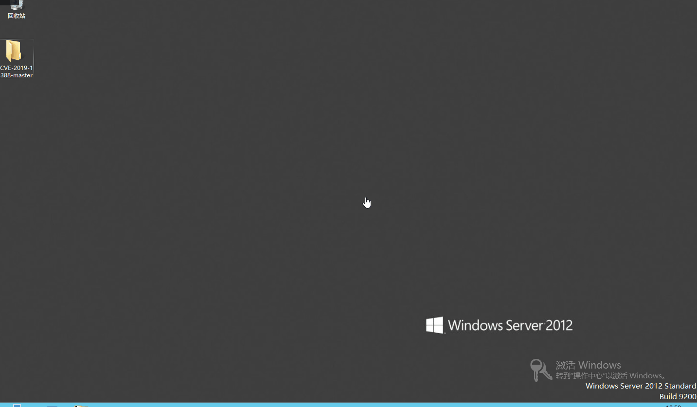
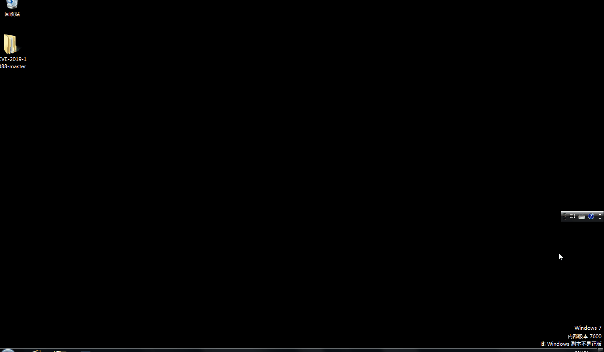
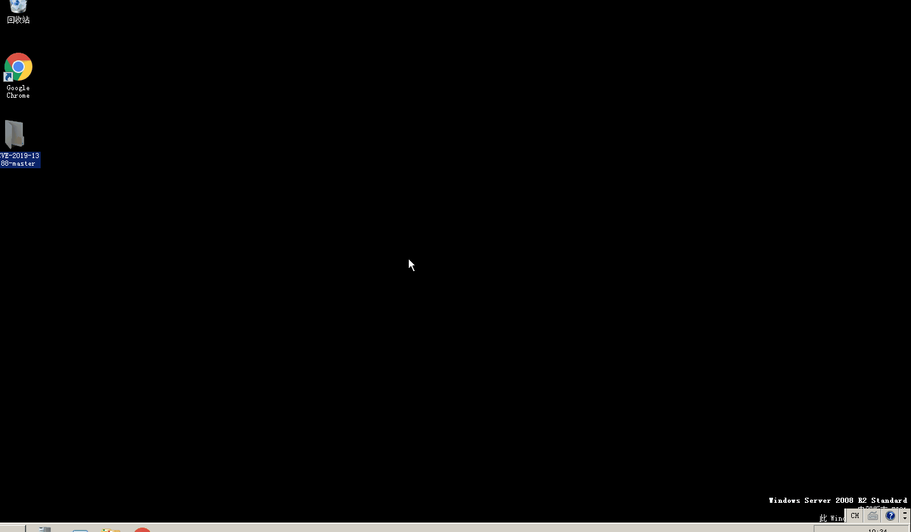

漏洞简介
该漏洞位于Windows的UAC（User Account Control，用户帐户控制）机制中。默认情况下，Windows会在一个单独的桌面上显示所有的UAC提示——Secure Desktop。这些提示是由名为consent.exe的可执行文件产生的，该可执行文件以NT AUTHORITY\SYSTEM权限运行，完整性级别为System。因为用户可以与该UI交互，因此对UI来说紧限制是必须的。否则，低权限的用户可能可以通过UI操作的循环路由以SYSTEM权限执行操作。即使隔离状态的看似无害的UI特征都可能会成为引发任意控制的动作链的第一步。事实上，UAC会话中含有尽可能少的点击操作选项。
利用该漏洞很容易就可以提升权限到SYSTEM
漏洞影响范围
Windows 2008r2 7601 link OPENED AS SYSTEM
Windows 2012r2 9600 link OPENED AS SYSTEM
Windows 2016 14393 link OPENED AS SYSTEM
Windows 2019 17763 link NOT opened
Windows 7 SP1 7601 link OPENED AS SYSTEM
Windows 8 9200 link OPENED AS SYSTEM
Windows 8.1 9600 link OPENED AS SYSTEM
Windows 10 1511 10240 link OPENED AS SYSTEM
Windows 10 1607 14393 link OPENED AS SYSTEM
Windows 10 1703 15063 link NOT opened
Windows 10 1709 16299 link NOT opened
漏洞复现
Windows 2012

Windows 7

Windows 2008r2
